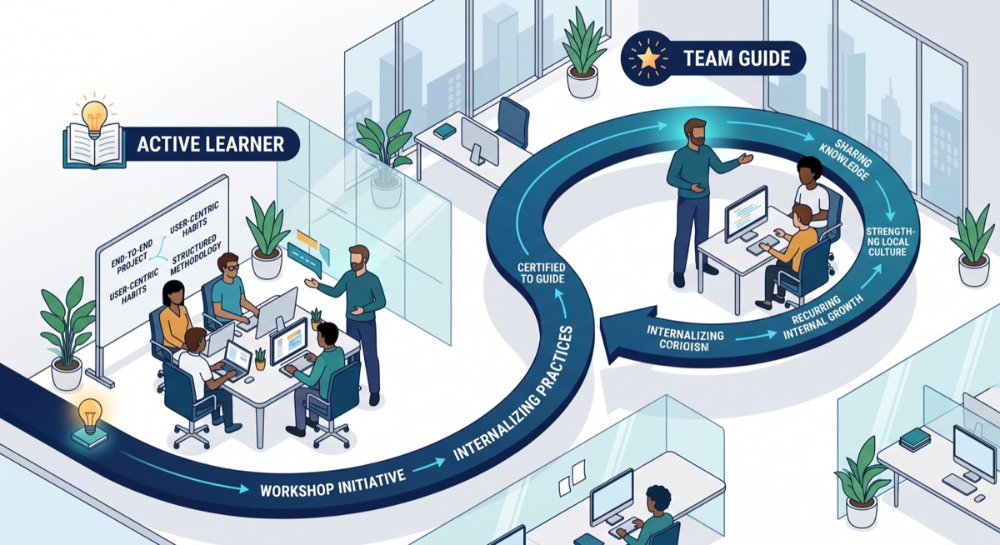

Šta je zapravo TrueNorth program i šta može da donese kompaniji
Iznutra o TrueNorth modelu obuke koju vode guide-ovi: šta uči, kako funkcioniše uloga team guide-a i kakva je stvarna korist za kompanije.
Mnogi programi profesionalnog razvoja obećavaju da će promijeniti način na koji radite, a onda vam uruče sertifikat koji ne mijenja ništa. TrueNorth je jedan od rijetkih kroz koje sam prošao gdje je efekat bio vidljiv skoro odmah — ne zbog sertifikata, nego zbog formata: obučava vas neko ko taj posao radi pred vama, a kasnije vi isto radite za nekog drugog. Kroz program sam prošao kao učesnik u Atini, a nešto kasnije sam prisustvovao radionici u Zagrebu, gdje sam bio u ulozi team guide-a. Tek kroz to drugo iskustvo sam zaista shvatio čemu je program namijenjen.

Šta je zapravo TrueNorth
TrueNorth je strukturisana metodologija razvoja softvera koja se prenosi kroz kratke, intenzivne radionice zasnovane na projektima, a ne kroz predavanja. Umjesto stalnog tima profesionalnih trenera, sesije vode ljudi koji su nedavno i sami prošli program kao učesnici, a zatim dobili sertifikat da kroz njega vode tim — to je uloga „Guide". Učesnici rade u malim grupama na nečemu što je blisko stvarnom problemu od početka do kraja, umjesto na izolovanim vježbama, a guide usmjerava tim kroz proces direktno, u praksi, umjesto da ga objašnjava ispred table.
Za kompaniju koja razmatra ovakav program, najbitniji nije neki konkretan alat ili nastavni plan — nego upravo ta struktura. Team guide nije profesionalni instruktor koga su doveli na nedjelju dana; to je neko ko je nedavno i sam bio učesnik i još se tačno sjeća gdje su dijelovi koji zbunjuju.
Ko je zapravo team guide
Team guide nije trener i nije tu da vodi radionicu ispred table. Bliži je još jednom učesniku — nekome ko sjedi sa timom, radi na istom problemu zajedno sa njima i ko je već prošao kroz program. Njegova uloga je da pomogne: da postavi pitanje koje pokrene zaglavljenu diskusiju, da primijeti kada se tim udaljio od osobe za koju zapravo pravi proizvod i da proces drži na pravom putu, a da pritom ne dijeli gotove odgovore. Tim i dalje radi posao i donosi odluke; guide se samo brine da se pritom ne izgubi.
Zato je guide neko ko je nedavno i sam bio učesnik. Ja sam program prošao u Atini, a kasnije sam na radionici u Zagrebu učestvovao kao team guide. Pošto sam ne tako davno sjedio na istom mjestu, još sam se sjećao gdje stvari postaju zbunjujuće, gdje tim obično žuri naprijed i šta mi je zaista pomoglo kada sam ja bio taj koji je zapeo — a to je u toj ulozi mnogo korisnije od bilo kakvog predavačkog iskustva.
Kada ste s druge strane, mijenja se ono na šta obraćate pažnju. Kao učesnik, ponio sam naviku koja je oblikovala kako sam kasnije radio QA: da stvarnu osobu koja će koristiti ono što pravite držite u vidu u svakoj fazi, a ne samo na kraju kada postoji interfejs po kojem se može klikati. Kao team guide u Zagrebu, nisam bio tu da tu naviku objašnjavam — bio sam tu da pomognem grupi ljudi koji se nikada ranije nisu sreli da do nje sami dođu za nekoliko dana, kroz probleme koje su morali sami da riješe. Brzo naučite koji podsticaji zaista pomažu, a koji samo zvuče dobro u tom trenutku — to je drugačija vještina od samog rada, i zahvaljujući njoj danas bolje objašnjavam odluke o testiranju developerima u sopstvenom timu.
Koliko ovo zapravo vrijedi kompaniji
Najdirektnija korist, i ona koju je najlakše uočiti, jeste sama obuka: ljudi se vraćaju sa konkretnim navikama — jasnijom disciplinom oko zahtjeva, boljim osjećajem ko je zapravo krajnji korisnik, strukturisanim navikama testiranja — koje odmah zatim primjenjuju na stvarnim projektima. Ali to važi za većinu pristojnih programa obuke i nije specifično za ovaj model.
Ono što je teže postići na bilo koji drugi način jeste uticaj team guide strukture na zadržavanje ljudi i internu kulturu. Poslati nekoga jednom na program je stavka u budžetu. Izgraditi tok u kojem vaši najbolji ljudi prođu program, a zatim se vrate osposobljeni da vode sljedeću rundu, pretvara obuku u stalni izvor internog rasta umjesto jednokratnog troška — ljudi dobijaju vidljiv sljedeći korak (od učesnika do team guide-a) koji ne zahtijeva novu titulu ili drugi posao. To takođe nenametljivo ujednačava način na koji ljudi u timu objašnjavaju sopstveni rad, jer vas vođenje sesije tjera da jasno izrazite prakse koje biste inače primjenjivali na autopilotu. QA inženjer koji je morao da objasni „zašto testiramo na ovaj način" sali punoj nepoznatih ljudi, kasnije to jasnije objašnjava i developeru iz sopstvenog tima.
Postoji i mrežni efekat, iako je manje opipljiv: ljudi koji su vodili radionicu, iz koje god kompanije ili grada dolazili, prošli su kroz isto osnovno iskustvo, pa razgovori o procesima između kompanija — standardi testiranja, kako tim uvodi nove ljude, šta zapravo znači „gotovo" — kreću sa više zajedničke osnove nego inače.
Gdje ovo ne pomaže i kada nije dobar izbor
Ništa od ovoga ne zamjenjuje sopstvenu inženjersku kulturu kompanije ni disciplinu u procesima. Tim može poslati ljude na ovakav program i ne vidjeti nikakvu promjenu ako niko ne primijeni ono što je naučio kada se vrati za svoj sto i uobičajene rokove — navika mora da se učvršćuje lokalno, a ne samo da se jednom pokupi na radionici. Povrat je i spor: tok od učesnika do guide-a donosi rezultate kroz nekoliko ciklusa, ne kroz prvi, pa će kompanija koja ga procjenjuje isključivo po rezultatima jedne generacije vjerovatno biti razočarana. I bolje funkcioniše u timovima koji već imaju neku sklonost ka internom mentorstvu; postaviti u ulogu team guide-a nekoga ko nikada nije želio ništa nikoga da uči vjerovatno se neće dobro završiti, sa sertifikatom ili bez njega.
Šta dalje
Ako razmišljate o nečemu ovakvom za svoj tim, počnite malo: pošaljite jednu ili dvije osobe koje već neformalno mentorišu druge, a ne najiskusnijeg inženjera po tituli. Pitajte ih šta bi zapravo promijenili u tome kako vaš tim uvodi nove ljude ili testira, prije i poslije — to je pravi signal, a ne sertifikat. Predvidite vrijeme da naučeno primijene na stvarnom zadatku u prvih nekoliko nedjelja, dok je još svježe. A ako program nudi put do uloge team guide-a, tretirajte to kao stvarnu dugoročnu investiciju, a ne kao opcioni dodatak — upravo je to korak koji jednokratni kurs pretvara u nešto od čega vaš tim ima korist iznova i iznova.